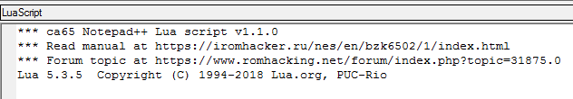
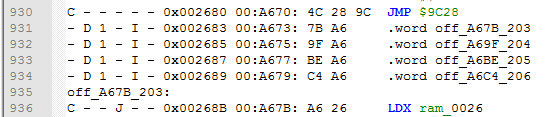

Notepad++ LuaScript plugin
Back to the main page
Table of contents
Notepad++ LuaScript plugin
Since this plugin requires having Notepad++ installed, you need to install it first. It's a very good text editor with lots of cool features. You can download if from here. Don't bother with setup options, just leave everything by default. If you already have Notepad++ installed, make sure it's updated in order to Plugins Admin also being updated.
Once Notepad++ is installed, go to Plugins -> Plugins Admin. Type LuaScript in Search field, enable checkmark, press Install button and confirm installation. Notepad++ will be closed while installing and then will be opened again.
If installation was successful, you can now see a blue Lua icon at the upper right corner which opens/closes a console at the bottom, and also being able to select Plugins -> LuaScript.
Choose Plugins -> LuaScript -> Edit Startup Script. A startup.lua file will be opened in Notepad++. Delete everything in this file. Now go to my disassembler's folder, to the _notepad folder, open startup.lua with a text editor, copy all text from it and paste into your empty startup.lua which you have opened with Edit Startup Script option.
Save startup.lua file, then close Notepad++ and open it again. If everything was done correctly, you will see some additional lines in a console, something like this.

And now by selecting Plugins -> LuaScript you will see a bunch of additional scripts which I have made. In case you want to create your own Notepad++ Lua scripts, here is the manual for LuaScript plugin functions.
Note that because LuaScript plugin has to check startup.lua for errors each time you open Notepad++, the program might take a bit more time to be launched than usual.
Bonus script
By adding my startup.lua, you've also enabled an auto option of calculation matches of the text in a current file instead of a file extension information. This number is displayed at the bottom left. Limit is 1000 matches for 1 symbol length and 10000 matches for 2 or more selected symbols (otherwise there can be a noticeable slowdown in the Notepad++).
6502 syntax
To install the same colorful syntax highlighting as you've seen in the previous article, go to Language -> User Defined Language -> Define your language.
Press Import button, and find 6502 syntax.xml file, which is located at the same _notepad folder as startup.lua. Then restart Notepad++. After that, all .asm, .inc and .log files will automatically use this syntax. You can manually edit the syntax in Language -> User Defined Language -> Define your language by choosing 6502 language.
Lua scripts
Now I'll be explaining what my scripts actually do. I recommend you to leave Lua console opened the whole time while using these scripts. Console will print useful information and errors.
In order to use scripts more quickly, set hotkeys to them. Open Settings -> Shortcut Mapper -> Plugin Commands tab. You'll find my scripts in here. Watch out for hotkeys conflicts, this window will warn you about them at the bottom.
Note that scripts don't work well with macros, you will end up with a garbage in your text file. You need to stop the marco first and then use the script.
--- CONFIG ---
Toggle counter mode
A counter is a 8-bit HEX (00-FF) or DEC (0-255) value, which is used with .byte x2 and Paste counter and increase it scripts. I'll explain it when we get to those.
Default counter mode is Disabled. You can set it to HEX mode, then DEC mode, then back to Disabled.
Set counter by selecting a 8-bit value
Default counter value is 00 for HEX or 0 for DEC. To change it, write somewhere in a text file a HEX or DEC value depending on current Counter mode, select this text and launch that script to set a new counter.
Toggle bytes conversion mode to .word | .dbyt
It is used for .byte x2 script. You can convert 2 bytes into a .word or a .dbyt depending on this setting. Default is .word.
Toggle labeling mode to $ | ofs_ | off_
It is used for .byte x2 script. You can simply convert 2 bytes to a .word or a .dbyt if current mode is $ (default), or you can add a label to this 16-bit value instead. I personally use ofs_ labels (blue syntax) for code locations and off_ labels (normal black syntax) for data locations.
Toggle offset value to 0 | 1
It is used for .byte x2 script. Default mode is 0. Offset corrects addresses for .word or .dbyt by 1 if set to 1. It will be explained below.
Toggle labeling range $8000 | $A000 | $C000 | $E000 | $6000
Used for Label tables and Label JMP/JSR scripts in order to specify 0x2000 range for autolabeling.
$8000 = $8000-$9FFF range (default), $A000 = $A000-$BFFF, $C000 = $C000-$DFFF, $E000 = $E000-$FFFF, $6000 = $6000-$7FFF (used for code located in SRAM).
--- BYTES ---
.byte -> instruction
Converts bytes into an instruction. Simply click on the text line where you want to start, and then keep launching the script for each new single instruction. Here is a before -> after example.
At the very least you need to try this script on every byte that has "- - - - - -" flags to see if it is a code or not. Sometimes the script can produce a couple of real instructions, but pretty soon the code will become a mess with a bunch of UNDEFINED instructions, which means that it is actually data. Use Ctrl + Z to undo.
To have a better view at the code, I suggest using autolabeling scripts first, which will mark most of the code/data locations.
.byte x2 -> [conversion] [label] [counter] [offset]
This script uses 4 arguments from CONFIG section.
The 1st one is Conversion mode, which is .word
or .dbyt.
The 2nd one is Labeling mode. Previous screenshot was used $ mode, meaning that no labels were added. If you use ofs_ or off_ mode, the script will try to find that .word or .dbyt value in the current file and add labels to this value, and also to this location if it finds one. If the label already exists, it won't be added for the second time.
You can test this script on bytes from tables, especially the ones with I flag, to see if they point to some locations, or they are just some data.
The 3rd one is Counter (ignored if disabled). In some cases you will want to add an ID number to the label, for example displaying an index value which is used to read these particular low and high bytes. Make sure you figure out the lowest index value, sometimes it can start with F0 or something if it's some kind of a control byte. Anyway, this is how HEX counter looks like with a label.
The counter is increased each time it was successfully used. If you want to set it to 00 again or some other value, use Set counter script. And here is how it looks like with a starting DEC value 203, and also with off_ labeling mode.

Note that for example ofs_89AB_00 and ofs_89AB_01 are in fact 2 different labels for the same $89AB location, and will be both added to it.
The 4th argument is Offset value. Sometimes a routine can push values to the stack, and execute an RTS instruction in order to go to a location selected from a table.
The problem with these low and high bytes from a table is that they need to be $1 address less than an actual address where code goes after RTS execution. This is where Offset value comes in with 1 value.
At line 13 we had 65 and 81 bytes ($8165), but in fact they point at $8166 address. The script automatically adds 1 to the address ($8165 + 1 = $8166), and by subtracting 1 near the .word label we get a perfectly working label. If you compile this assembly file, bytes will still be 65 and 81 as they should be.
Note that Offset value will be affecting $ labeling mode as well.
.byte -> [counter] .byte
Sometimes you will want to have a nice table with several bytes in a single line, not just 1 byte in 1 line. This script uses Counter value (HEX or DEC, doesn't matter).
First you need to set a Counter to 2 or higher value. Then you select a number of lines that can be divided by this value. For example you have set Counter to 4, which means you need to select 4, 8, 12, 16 (and so on) number of lines. Then launch the script. Here is a before -> after example with Counter value = 4 and 24 .byte lines.

Note that selected lines will be deleted, and list of bytes will be added without flags and addresses info.
.byte $ -> .byte %
This script converts a byte to 8 bits.
List of bytes -> list of .byte
This script converts a text with bytes to lines with .byte. You can copy bytes from a Hex Editor, paste to the file, select lines with these bytes and launch the script.
Here is a before -> after example. These bytes were copied from 010 Editor, which copies bytes with spaces and 16 bytes in a line for some reason, but the script can handle that.
--- LABELS ---
These scripts are for autolabeling addresses in the current file. They can take several seconds to be completed, so don't panic if Notepad++ freezes for a bit.
Scripts only work with instructions that have $xxxx operand. If it can't detect $ symbol, it assumes that the label is already added for this instruction.
Make sure to check out the console and deal with possible errors if the script can't find some addresses. If an error occurs, label won't be added, you need to deal with this manually. But if you simply want to create a quick disassembly just to look at the code, don't bother too much with these errors.
Also you can launch these scripts over and over again, for example after using .byte -> instruction script to label new unlabeled instructions.
Label all branches
This scripts labels all branch instructions, which are BEQ, BNE, BMI and so on.
This is a "must done" script, because if branch instructions are not labeled, ca65 assembler will be very disappointed with that.
I've encountered errors using this script only when BIT (2C) instructions were masking 2-byte instructions, for example BIT $01A9 (2C A9 01) was also LDA #$01 (A9 01), because a branch was pointing to the operand of that BIT instruction. It's actually quite a smart trick.
Label tables [range]
This script labels all instructions that use Absolute,X and Absolute,Y addressing modes, for example LDA $xxxx,Y.
It uses Labeling range argument, and won't label operands which don't fit into this range. For example with $8000 config range it will label $8000-$9FFF range.
If you want to label another range, toggle Labeling range config and launch Label tables again. You can test ranges that are not intended for your current bank in order to occur errors on purpose, to see if there are instructions that are reading bytes from another bank.
Some of the errors that can occur is when the operand doesn't point to the table directly. For example in this particular case the start Y value is FC, not 00, so the actual address is $88D2 + FC = $89CE.
To make it work, you need to manually add a tbl_89CE label to $89CE location, while LDA $88D2,Y should look like this.
In my case error occurred because the script couldn't find $88D2, but if it would find it, a label would be added as usual. So you need to double check all tbl_ labels and correct them if needed.
Note that some tables can be only 1 byte length, for example code can read byte 20 from $89AB via LDA $89AB instruction, not via LDA #$20 instruction. If these addresses don't have labels, you're in a trouble when you start to edit and shift code. However, my script doesn't find these cases. You can do this manually by searching in Notepad++ with a specific regular expression - (LDA|LDX|LDY|STA|INC|DEC|CMP|ADC|SBC|ORA|AND|EOR|ASL|ROL|LSR|ROR).\$(6|7|8|9|A|B|C|D|E|F)....\n
Label JMP/JSR [range]
This script also takes Labeling range as an argument, but it labels JMP (absolute 4C) and JSR instructions only. Labels for JMP will look like loc_, and for JSR - sub_.
There is less room for errors than with Label tables script, however some JMP and JSR instructions can actually point to the address in another bank. You need to keep an eye on bankswitching routines and see what bank it selects before executing a JMP/JSR. Luckily that's not a very common case.
Taken together sub_, loc_ and ofs_ labels, which are all highlighted with blue syntax, you can see how exactly code gets to these locations. Also, there can be a room for optimizations, like sometimes JMP can jump directly to RTS (look at the loc_8A90 label on the previous screenshot), meaning you can use another RTS instead of that JMP, saving 2 bytes of space and 3 cycles.
And just like with Label tables script, you can test unintended ranges to search for jumps into another bank.
--- OTHER ---
Clear console
Simply clears the console if you want to clear it for some reason.
Paste counter and increase it
Pastes counter to the text file, depending on the current value and Counter mode. After that the counter is increased by 1. It can be used together with some marco to add comments to tables or whatever.